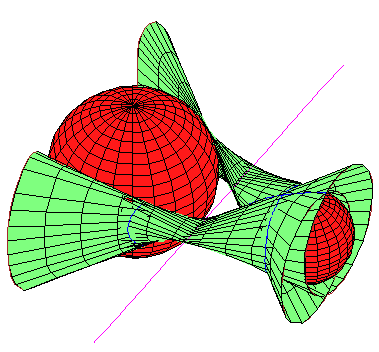
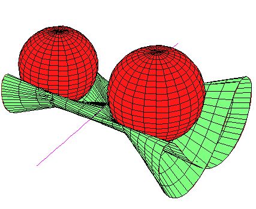

We study the set of lines that meet a fixed line and are tangent to two
spheres and classify the configurations consisting of a single line
and three spheres for which there are infinitely many lines tangent to the
three spheres that also meet the given line.
All such configurations are degenerate.
The path to this result involves the interplay of some beautiful and
intricate geometry of real surfaces in 3-space, complex algebraic
geometry, explicit computation and graphics.
Companion web page.

